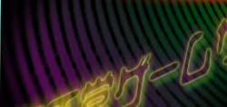
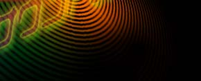
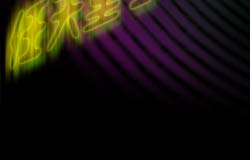
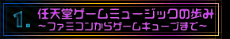
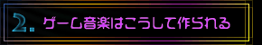
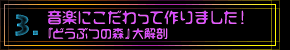

|  |  |
|  |    |
| Ｎ．Ｏ．Ｍ５月号、６月号は２号続けての大特集。「任天堂ゲームサウンドのすべて」をお届けします。 みんなが普段、プレイしているゲームの音楽はどんな風に作られているのでしょうか。長い歴史をもつ任天堂のゲームミュージックの世界を、たっぷりとお届けします。ページ上で聴ける音楽もご用意しました。また、音楽をクローズアップした話題のアノ作品にも迫りますよ。ゲームファン必見、そして最近ゲームを始めたアナタや、ファミコン世代のお父さんお母さんにも、きっと楽しめる内容です！ |